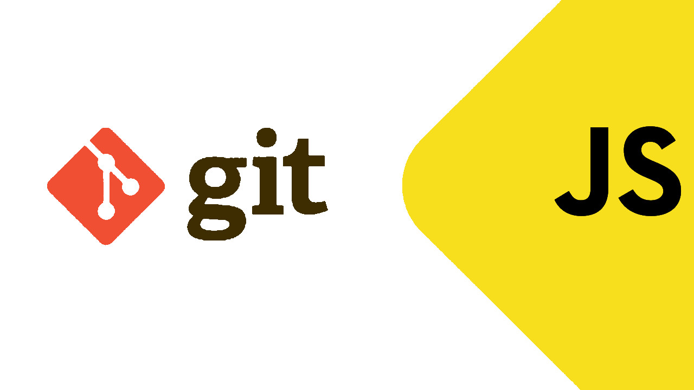
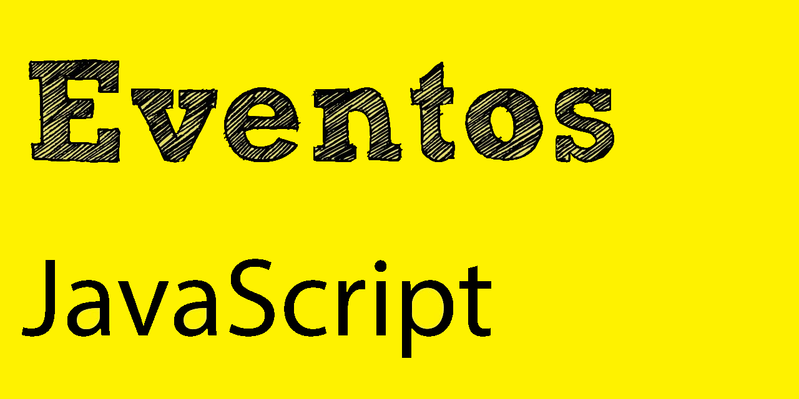
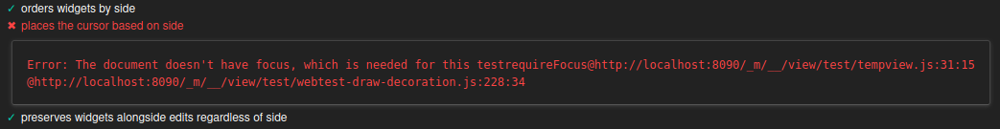
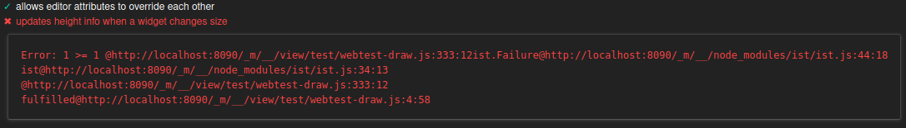

Checkpoint 11
Estas son las preguntas, pon ejemplos, mejores prácticas…
Nota: pulsa en la pregunta para ver la respuesta.
Preguntas
-
¿Por qué usamos ramas git?

Para poder tener un mejor control del código Git ofrece a sus desarrolladores las ramas. Aunque es normal que cualquier sistema de control de versiones tenga ramas (o alguna herramienta con características parecidas), Git las implementa de tal forma que mejora la eficiencia del trabajo en cada proyecto.
¿Qué son las ramas en Git?
Las ramas son una bifurcación que permite la evolución del código (y de su historial) de forma diferente en cada una de ellas, al proporcionar un entorno aislado para cada cambio en el código. Son una forma de almacenar el historial de cualquier proyecto, una guía instantánea para ver los cambios realizados.
Si se quiere añadir una nueva función, o si se quiere arreglar un error, se genera una nueva rama en la que se alojan estos cambios. Al realizar esta acción va a resultar más complicado que algún error o fallo del nuevo código se incorpore al código principal, dando la oportunidad de limpiar el historial, antes de fusionarlo con la rama principal, y mejorando la eficiencia en el trabajo.
Al teclear el comando
git branchen la consola nos muestra las ramas existentes. En vez de copiar entre directorios, Git almacena las ramas como referencia, es decir, no es un contenedor si no un índice. El historial de una rama se extrapola de las diferentes relaciones. Las ramas en Git representan una línea independiente de desarrollo. Se pueden ver como un nuevo historial en el proyecto.
El comando
git branchpermite crear, listar y eliminar ramas, así como editar su nombre. Eso sí, no permite cambiar entre ramas (para lo que se usagit checkout) o volver a unir un historial bifurcado (que se realiza con el comandogit merge).
En el gráfico anterior podemos ver como se trabaja con ramas en Git y sus comandos.
Usar Git puede presentar algunos inconvenientes, como la curva de aprendizaje inicial, la resolución de conflictos al fusionar ramas, y la necesidad de mantener un flujo de trabajo organizado para evitar confusiones. Sin embargo, podría decirse que los beneficios de control de versiones y colaboración superan a los inconvenientes si seguimos unas pautas:
- Crear ramas separadas para nuevas características o correcciones de errores.
- Hacer commits pequeños y frecuentes.
- Utilizar mensajes de commit descriptivos y significativos.
- Realizar pruebas antes de hacer merge a la rama principal.
- Mantener actualizada la rama principal con los cambios de otras ramas mediante merge o rebase.
En conclusión, trabajar con ramas en Git para los desarrolladores, lo elimina todo, desde el tiempo perdido esperando confirmaciones hasta las horas de trabajo necesarias para integrar los cambios en un sistema de control de versiones centralizado. Les ofrece a los desarrolladores un entorno seguro para trabajar. Permite a los diseñadores probar nuevas interfaces en el producto real con pocos gastos y reaccionar a las quejas de los clientes de inmediato.
Ser ágil consiste en descubrir qué funciona lo más rápido posible, incrementar las labores que tienen éxito y eliminar las que no lo tienen. Git sirve como multiplicador de todas las actividades y garantiza que cada uno haga su trabajo con más eficiencia.
¿Por dónde seguir?
Ahora que sabes un poco más sobre qué es Git, las ramas en Git y cómo ver ramas en git, ¿quieres seguir adquiriendo conocimientos en el área?
Para documentarte más puedes recurrir a este artículo o ver el video. Y siempre se puede usar
git commando --helpen la línea de comandos. -
¿Cuál es el comando para crear un repositorio git?

Vamos a crear un repositorio de git básico, para lo cual primero, crearemos un directorio para el
proyectoy nos cambiamos a él, a continuación, crearemos nuestro primer repositorio git llamadoapp1.git(que estará dentro del directorio del proyecto) y nos cambiamos a él:mkdir proyecto && cd proyectomkdir app1.git && cd app1.gitAhora, para inicializar el repositorio (no olvide usar la palabra clave
bareen el comando para crear un repositorio simple) tecleamos:git --bare initInitialized empty Git repository in /home/git/proyecto/app1.git/Este comando creará una nueva carpeta oculta llamada
.giten la ubicación actual, que es donde se almacenará la información del repositorio.ls -ltotal 32 drwxrwxr-x 2 git git 4096 Mar 8 12:33 branches -rw-rw-r-- 1 git git 66 Mar 8 12:33 config -rw-rw-r-- 1 git git 73 Mar 8 12:33 description -rw-rw-r-- 1 git git 23 Mar 8 12:33 HEAD drwxrwxr-x 2 git git 4096 Mar 8 12:33 hooks drwxrwxr-x 2 git git 4096 Mar 8 12:33 info drwxrwxr-x 4 git git 4096 Mar 8 12:33 objects drwxrwxr-x 4 git git 4096 Mar 8 12:33 refsRepositorio de clonación
Ahora se puede crear un clon de este repositorio desde cualquier sistema cliente usando, por ejemplo, el siguiente comando:
git clone { usuario }:proyecto/app1.gitAlgunas recomendaciones adicionales al inicializar un repositorio Git:
- Siempre es una buena idea inicializar un repositorio en la raíz de tu proyecto, donde se almacenarán todos los archivos relacionados con ese proyecto específico. Esto facilitará el seguimiento de los cambios y la colaboración en el futuro.
- Antes de hacer cualquier cambio en el repositorio, asegúrate de hacer un commit inicial para capturar el estado inicial del proyecto. Esto asegurará que todo esté en orden desde el principio.
- Considera configurar un archivo
.gitignorepara especificar los tipos de archivos o directorios que no quieres que Git rastree. Por ejemplo, puedes excluir archivos generados automáticamente o archivos de configuración específicos del sistema operativo.
Algunos posibles inconvenientes al inicializar un repositorio Git podrían incluir:
- Sobrecarga de mantenimiento: Al utilizar Git, se agrega una capa adicional de mantenimiento para realizar seguimiento de los cambios, realizar commits, manejar ramas, etc. Esto puede resultar en una sobrecarga adicional para el desarrollador si no se está familiarizado con los conceptos y comandos de Git.
- Posible confusión: Si no se entiende completamente cómo funciona Git y se cometen errores al realizar operaciones como revertir cambios, fusionar ramas, o reorganizar el historial, se podrían introducir problemas en el repositorio.
- Posible pérdida de datos: Si no se tiene cuidado al realizar operaciones delicadas en el repositorio, como el reseteo duro de un commit o la reescritura de la historia, se corre el riesgo de perder datos importantes.
- Conflicto con otros sistemas de control de versiones: Si un proyecto ya tiene otro sistema de control de versiones establecido, digamos Subversion, podría ser complicado integrar Git sin causar conflictos o problemas de compatibilidad.
Es importante tener en cuenta estos puntos al decidir si se debe inicializar un repositorio Git, y asegurarse de comprender los fundamentos de Git antes de usarlo en un proyecto.
¡¿No te ha quedado claro?! En la documentación del comando y en este video te lo pueden aclarar… o no.
-
¿Qué es un conflicto de fusión?

Los Conflictos de Fusión son comunes en la codificación colaborativa, pero no tienen por qué ser intimidantes. Con una buena comprensión de cómo ocurren y cómo resolverlos y las mejores prácticas, se pueden solventar con facilidad y mantener el proyecto funcionando sin problemas.
Espero que esta explicación te haya sido útil. Siempre te queda el recurso de leer y el de ver.
-
¿Qué es el DOM?

Las siglas DOM (Document Object Model) hacen referencia a la estructura del documento HTML. Una página HTML está formada por múltiples etiquetas anidadas que dan forma a lo que se denomina árbol DOM (o, simplemente DOM).

Cuando nos referimos al DOM lo hacemos a esta estructura de árbol, mediante la cuál podemos acceder a los elementos de HTML desde, en nuestro caso, JavaScript. Se pueden añadir nuevas etiquetas, eliminar o modificar otras (cambiar sus atributos HTML, añadir clases…), cambiar el contenido del texto, etc.
El objeto
documentEn Javascript, la forma de acceder al DOM es a través de un objeto llamado
document, que representa la página de la pestaña del navegador donde nos encontramos. En su interior pueden existir varios tipos de elementos, pero principalmente seránelementonode:-
elementes la representación genérica de una etiqueta:HTMLElement. -
nodees una unidad básica que puede serelemento un nodo de texto.
Algunas de las ventajas de trabajar con el DOM son:
- Páginas web dinámicas: El DOM permite actualizar dinámicamente el contenido de una página web sin necesidad de recargarla por completo. Esto puede proporcionar una mejor experiencia de usuario y mejorar el rendimiento.
- Accesibilidad: El DOM proporciona una forma estandarizada de acceder y manipular los elementos de una página web, lo que facilita la creación de aplicaciones web.
- Manipulación de JavaScript: El DOM permite manipular elementos, estilos y atributos HTML mediante JavaScript. Esto permite crear aplicaciones web interactivas y dinámicas.
El mayor inconveniente es el Rendimiento: La manipulación del DOM puede ser más lenta que la modificación directa del código fuente HTML subyacente. Esto puede afectar al rendimiento de la aplicación web, especialmente cuando se trata de árboles DOM de gran tamaño.
Si no se desea trabajar con el DOM directamente se pueden usar librerías o frameworks (como React, Vue o Angular) con un coste mínimo en tiempo de ejecución.
Puedes ampliar conocimientos leyendo este artículo o viendo el video.
-
-
¿Qué es un oyente de eventos?
En el momento de utilizar una aplicación, el usuario desencadena acciones/eventos que son tratadas por el programa y devueltas al usuario.

Esta es una tabla con algunos eventos:

Podemos manejar los eventos directamente como atributos:

o, para cosas más complejas, como funciones:

Pero lo más recomendable es hacer uso de la función
addEventListener(que escucha hasta que el evento sucede) porque permite separar el código HTML del Javascript, lo cual hace más sencillo mantener el código. La sintaxis sería:document.getElementById(id).addEventListener(evento, función, bool)Donde:
- evento es el nombre del evento sin el prefijo “on-”,
- función, es el nombre de la función que ejecuta el evento,
- bool, indica si el evento de captura está antes o después. Puede ser: (true) o (false)
Los dos primeros parémetros son obligatorios
Aunque es una forma eficaz de adjuntar un evento a un elemento en el DOM, tiene sus beneficios:
- Flexibilidad: Permite adjuntar múltiples eventos a un mismo elemento.
- Separación de preocupaciones: Promueve un mejor diseño de código al separar la lógica del evento de la etiqueta HTML.
- Compatibilidad: Es compatible con todos los navegadores modernos.
- No sobrescribe: No sobrescribe los eventos previamente adjuntados al elemento.
y sus problemas:
- Compatibilidad con versiones antiguas de IE: Puede haber problemas de compatibilidad con versiones antiguas de Internet Explorer.
- Eventos anidados: Puede haber problemas si se adjuntan eventos anidados y se necesita controlar el orden de ejecución.
- Escuchadores múltiples: A veces, adjuntar múltiples escuchadores a un mismo evento puede complicar el código y hacerlo difícil de mantener.
En general, se puede decir que es una buena práctica y se recomienda su uso en la mayoría de los casos.

En este video podrás aclarar cualquier duda, pero si prefieres leer.
-
¿Qué es un selector de consultas?

El
querySelector, o selector de consulta, es un método que permite seleccionar el primer elemento que coincida con el selector especificado en el documento. Si no encuentra coincidencias devuelvenull.// Usando querySelector con un selector de etiqueta let div = document.querySelector(‘div’); // Usando querySelector con un selector de clase let miClase = document.querySelector(’.miClase’); // Usando querySelector con un selector de id let miId = document.querySelector(’#miId’);Por otro lado tenemos el método
querySelectorAllque devuelve todos los elementos que coinciden con el selector especificado.// Usando querySelectorAll para seleccionar todos los elementos div let divs = document.querySelectorAll(‘div’); // Usando querySelectorAll para seleccionar todos los elementos con una clase específica let elementosMiClase = document.querySelectorAll(’.miClase’);Como añadido, recordar que existen también métodos de selección específicos que, aunque tienen un mejor desempeño (en la mayoría de los casos) y se pueden usar, no son recomendados. Así tenemos los métodos para etiquetas (
getElementsByTagName), identificadores (getElementsById), clases (getElementsByClassName) etc.Por ejemplo, para obtener las celdas que contienen los resultados de una tabla con un
idscore, se pueden adoptar, al menos, dos enfoques. Al utilizar solo las específicas (API del nivel 2 de DOM), se requiere un script como el siguiente que recorre en iteración cadatrdentro de cadatbodyen la tabla para encontrar la segunda celda de cada fila.var table = document.getElementById(“score”); var groups = table.tBodies; var rows = null; var cells = []; for (var i = 0; i < groups.length; i++) { rows = groups[i].rows; for (var j = 0; j < rows.length; j++) { cells.push(rows[j].cells[1]); } }Alternativamente, usando el método
querySelectorAll(), ese script se vuelve mucho más conciso.var cells = document.querySelectorAll(”#score>tbody>tr>td:nth-of-type(2)”);Hay que tener en cuenta que el script opera en el DOM y funciona independientemente de la sintaxis utilizada para crear el documento. Por lo tanto, funcionará correctamente para una tabla creada e insertada dinámicamente, XHTML o HTML.
Errores comunes
Un error común es olvidar que
querySelectorsolo devuelve el primer elemento que coincide. Si se necesita seleccionar varios elementos hay que usarquerySelectorAll.Otro error común es no verificar si el elemento seleccionado existe antes de manipularlo.
// Forma de verificar si un elemento existe let miElemento = document.querySelector(’.miClase’); if(miElemento) { miElemento.style.color = ‘red’; }Hay que recordar que
querySelectorAlldevuelve unaNodeList, no unArray. Para usar los métodos de Array en unaNodeList, hay que convertirlo aArrayprimero.let divsNodeList = document.querySelectorAll(‘div’); let divsArray = Array.from(divsNodeList);Está claro que la gran ventaja de su utilización es la flexibilidad que ofrece a la hora de seleccionar elementos del DOM usando selectores CSS, sin olvidar la ayuda que ofrece a la legibilidad del código al permitir la selección de elementos de forma más concisa. En cuanto a sus inconvenientes destacan la pérdida de eficiencia frente a los métodos específicos (especialmente cuando se trabaja con grandes conjuntos de datos), que no es compatible con los navegadores antiguos y que su uso excesivo puede resultar en un código menos mantenible y propenso a errores al depender en exceso de selectores específicos de la estructura del DOM.
En resumen, es una herramienta útil para la selección de elementos, pero su uso debe ser equilibrado con consideraciones de rendimiento y compatibilidad con navegadores.
Si quieres saber más pasa por aquí o échale un ojo a este video.
Extra
-
Tutorial CodeMirror 6
CodeMirror es una colección de módulos que proporcionan un editor de código y texto con todas las funciones. Esto significa que se puede elegir qué instalar para configurar un editor y, según sus necesidades, requerirá que junte más o menos piezas.
En este tutorial, veremos como implementar un editor de código en CodeMirror 6. Lo haremos para el lenguaje SQL pero el proceso se puede aplicar a todo lenguaje para el que haya librerías porque de lo contrario habría que crearlas.
Empezaremos por clonar su directorio de desarrollo en nuestro directorio de trabajo. De entre las opciones existentes he elegido
gh repo clone codemirror/devComprobamos que la versión de node.js que tenemos instalda es superior a la 16 y es accesible
node --versionPara clonar los paquetes que componen el sistema, instalar dependencias y compilar los paquetes ejecutamos
node bin/cm.js installEn cualquier momento puedes reconstruir los paquetes, ya sea ejecutando
npm run prepareen su subdirectorio, o todos a la vez connode bin/cm.js buildAconsejan que el desarrollo se haga configurando
npm run devque inicia un servidor que reconstruye automáticamente los paquetes cuando su código cambia y abre un servidor de desarrollo en el puerto 8090 ejecutando la demostración y las pruebas del navegador.
En mi caso ha dado dos errores en la primera ejecución de las pruebas pero en la segunda ha pasado todas.
 Comenzaremos creando un archivo index.html con el enlace a nuestro archivo de estilos styles.css y a nuestro guión editor.js, sin olvidarnos del
divcon el identificador editor que será donde se muestre nuestro editor:En nuestra hoja de estilos (styles.css) iremos incluyendo todos los que estimemos oportunos:
Ahora podemos crear el archivo del editor principal (editor.js) agregando lo siguiente:
Un editor de código real necesita combinaciones de teclas, resaltado, un margen de número de línea o un historial de deshacer, etc. Si bien se puede agregar cada uno manualmente, CodeMirror proporciona un paquete de “configuración básica” que incluye todas las funciones de un editor de código. Por eso utilizamos basicSetup.
Como puedes ver, también usamos el paquete @codemirror/lang-javascript. Dado que cada lenguaje de programación tiene sus reglas y características específicas, debemos utilizar el paquete de lenguaje correcto. De esta manera nos beneficiamos de un analizador, autocompletado, resaltado, etc.
Aquí se puede ver cómo utilizar el lang-html:
Vemos que hay dos partes:
- estado (EditorState): que contiene las estructuras de datos que modelan el estado del editor (que se compone de un documento actual y una selección)
- vista (EditorView): que proporciona la interfaz de usuario del editor.
El editor se representará dentro del cuerpo. Si desea que se represente en otro lugar, solo se necesita cambiar el selector de elementos establecido en parent (tal y como vimos en el primer ejemplo).
Para establecer un documento inicial para el editor, solo se necesita establecer la propiedad doc en ese valor. En el primer editor le asignábamos la variable jscode que al comienzo habíamos declarado con nuestro código de prueba correspondiente.
Para leer el texto actual mostrado por el editor podemos usar:
Se puede cambiar el valor de varias maneras enviando cambios.
En este ejemplo se inserta el texto al comienzo el documento.
En este otro reemplazaríamos un texto. Luego, para reemplazar todo, solo necesita obtener la longitud del texto.
Se puede enviar varios cambios a la vez si se necesita; los cambios deben ser una serie de cambios individuales.
Habrá veces que deseemos saber cuando se realiza un cambio y hacer algo con el nuevo código, por ejemplo, reinterpretar/evaluar el código. Esto se hace agregando un
updateListenera la vista del editor (por supuesto, si no desea procesar cada vez que se presiona una tecla, se debe usar un tiempo de espera).La única pieza que falta es un evaluador de código, que para JavaScript debería ser fácil de hacer (ya que se ejecuta en el navegador). Simplemente añade algo de
console.log()para ver los resultados de la ejecución del código en la consola DevTools del navegador.Si unimos todo, podríamos tener:
Y eso es todo. Tienes un bonito patio de juegos de JavaScript que se puede integrar en una plataforma más grande.
En la página oficial de CodeMirror podrás encontrar toda la documentación que puedas necesitar sobre los más de 100 lenguajes soportados (o como hacer que soporte el tuyo) y sobre los addons y temas (o cómo crearlos) para personalizarlo. También puedes descargar el código de GitHub.
Puedes ver la creación de una terminal en este video y en este otro. Y si prefieres leer.